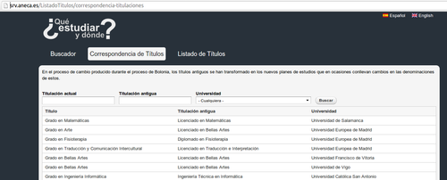

¿Por qué?
Hace unos meses, la hermana de un conocido vino a verme porque quería estudiar mi carrera (teleco) o algo lo más parecido posible. Vino a verme a la Escuela (siendo yo estudiante de doctorado) y lo primero que me sorprendió es mi universidad (UPM) tenía 4 grados diferentes equivalentes al anterior teleco. Me resultó imposible explicar a una alumna de selectividad la diferencia entre telemática y arquitectura de ordenadores.
Mi sorpresa se vio aumentada cuando comprobé con ella que no solo la UPM diferenciaba los grados impartidos en las antiguas escuelas técnica y superior, sino que la antigua titulación "superior", tenía distintas denominaciones en cada una de las universidades con las que se suele medir/comparar la UPM, como la UPC o la UC3M. Lo siguiente era comprobar si era un caso aislado o algo general en la adaptación del plan Bolonia
¿Cómo?
Afortunadamente en este caso había datos medianamente disponibles para extraer conclusiones. Existe una agencia, dependiente del Ministerio de educación que se dedica a aprobar los planes de estudio y sus equivalencias. Es la ANECA y para mi sorpresa tiene publicando un listado de equivalencias [link].

Lo siguiente fue construir programa/robot que se descargase esos datos y los pusiera en un formato tratable. En un par de horas recorrió las 100 y pico páginas y extrajo más de 6000 correspondencias. El archivo generado está disponible en formato CSV (se puede abrir en Excel) aquí.
La última tarea fue construir esta web haciendo uso de jsnetwokX y d3,js para la visualización de red, typeahead para el buscador de títulos, y los clásicos bootstrap y jQuery para la navegación y apariencia. Si os apetece hacer algo parecido, todo el código está disponible en github
Un pequeño análisis
Lo primero, parece claro que pese que originalmente se presentó el plan Bolonia como una enseñanza en dos tramos, un primer tramo génerico (grado) seguido de una especialización (máster), esto no se ha cumplido. De hecho la especialización es aún mayor que en el plan anterior.
Además el título ha dejado de ser digamos estándar. Cuando mi generación accedió a la universidad (2004) teníamos la posibilidad de comparar las universidades por notas de corte... Si alguien tenía interés en Teleco buscaba la lista y tomaba una decisión informada (por ejemplo optando en primer lugar por la universidad más solicitada). Los chicos de hoy ya no tienen esa capacidad, y te los encuentras dilucidando si quieren cursar el grado XYW o el grado XWG sin entender que son ni X, ni W ni Y ni G (el problema más serio es que las empresas que los contrarán al final tampoco tienen claro los matices, pues al final en muchas ocasiones el título ha sido elegido por el equipo rectoral con criterio de marketing en lugar de informativo.
Por ambas razones, opino que con la conversión a grados los alumnos de nuevo ingreso han perdido capacidad para tomar una decisión informada. Saben menos de lo que van a estudiar, menos de cómo de buenos son en ello y menos de a qué Universidad hace mejor trabajo. Esto tienen unos efectos colaterales terribles, ya que las universidades no se ven evaluadas por sus potenciales estudiantes, y carecen por tanto del más importante incentivo para innovar y mejorar.
¿Quién?
Mi nombre es Carlos Herrera Yagüe (@cyague) y estoy terminando mi doctorado en análisis de datos con foco en redes (supongo que eso explica lo particular de la visualización). Si queréis saber algo más de lo que hago, pinchad alguno de estos enlaces xD.